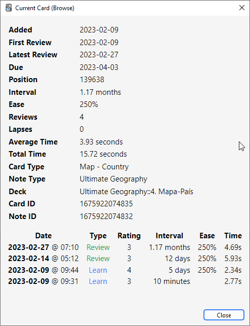
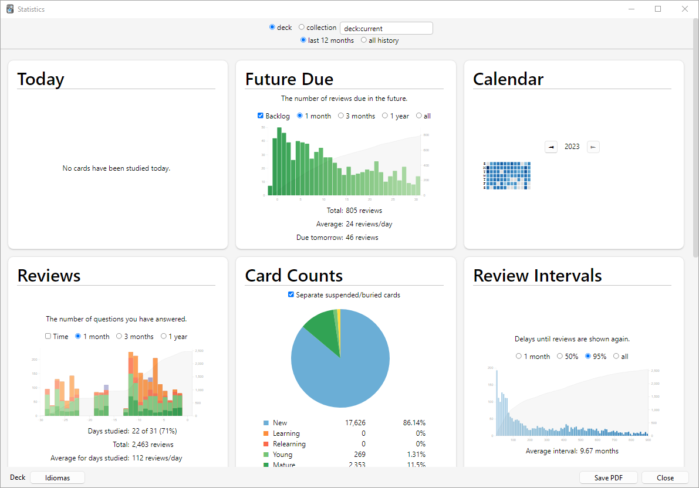

Karta haqida maʼlumot, grafiklar va statistika
Card Info (Karta haqida maʼlumot)
Karta haqidagi maʼlumotni Cards>Info (Kartalar>Maʼlumot) menyu bandi orqali, karta ustida sichqonchaning oʻng tugmasini bosib, keyin Info (Maʼlumot) ni tanlash orqali yoki oʻrganish ekranida I tugmasini bosib koʻrishingiz mumkin.

Baʼzi izohlar:
Position (Oʻrin)
Kartaning boshqa yangi kartalarga nisbatan qaysi tartibda chiqishini
koʻrsatadi. Oʻrinni Browse oynasida oʻzgartirish mumkin. Karta bir marta
oʻrganilgach, qoʻlda yana yangi holatga qaytarilmasa, oʻrin ishlatilmaydi.
Interval
Bir takrorlashdan keyingisigacha boʻlgan kutish vaqti. Vaqtlar qisqartirilgan
shaklda yoziladi; "0s, 1m, 3h, 4d, 5mo, 6y" mos ravishda soniya, daqiqa, soat,
kun, oy va yilni bildiradi.
Ease
Takrorlash kartasiga "Good" tugmasi bilan javob berganingizda interval
taxminan qanchaga oshishini koʻrsatadi.
Pastki qismda kartaning takrorlash tarixi koʻrsatiladi. Rating (baho) tugmani bildiradi (1 = Again, 4 = Easy). Kartalar "reset" (tiklash) yoki "set due date" (muddat sanasini belgilash) amallari bilan qoʻlda qayta rejalashtirilganda, turi Manual, bahosi esa 0 deb yoziladi.
Statistics (Statistika)
Statistika oynasiga asosiy oynaning yuqorisidagi Stats (Statistika) tugmasini bosib yoki T tugmasini bosib kirish mumkin.

Selecting Decks / Collection (Toʻplamlar / kolleksiyani tanlash)
Deck (Toʻplam)
Standart holatda statistika oynasi hozir tanlangan toʻplam va uning har qanday ichki toʻplamlari statistikasini koʻrsatadi, lekin ekran tepasidagi matn maydoniga nomini yozib yoki (Anki 2.1.61 dan) pastdagi toʻplam tanlagichdan foydalanib, kolleksiyangizdagi istalgan toʻplamni tanlashingiz mumkin.
Collection (Kolleksiya)
Bu katakchani belgilasangiz, butun kolleksiyangiz uchun statistika koʻrsatiladi. Shuningdek, tepadagi qidiruv oynasiga filtrlar qoʻshib, ixtiyoriy qidiruvlar uchun grafiklarni ham koʻrsatishingiz mumkin (2.1.28+).
History (Tarix)
Standart holatda Anki sizga oxirgi 12 oy statistikasini koʻrsatadi. Tepada buni butun tarix (all history) yoki toʻplam mavjud boʻlgan davr (deck life) doirasiga oʻzgartirishingiz mumkin. (Tepadagi "today" (bugun) boʻlimi, albatta, bu tanlovga bogʻliq emas.)
More (Yana)
-
Pastdagi "Save PDF" (PDF saqlash) ni bossangiz, statistikangiz PDF hujjati sifatida ish stolingizdagi faylga saqlanadi. Bu statistikangizni boshqalar bilan ulashishni osonlashtiradi.
-
Yozuvlarni oʻchirganingizda, ularning takrorlash tarixi Anki'da saqlanib qoladi. U muayyan toʻplam statistikasini koʻrayotganda kiritilmaydi (chunki Anki oʻchirilgan kartalar qaysi toʻplamga tegishli boʻlganini bilmaydi), lekin butun kolleksiya statistikasini koʻrayotganda kiritiladi.
-
Anki 2.1.28+ qayta ishlangan grafiklarni joriy qildi. Eski grafiklarga hali ham Stats tugmasini Shift bilan bosib kirish mumkin.
Today (Bugun)
Statistika oynasining tepasida bugun yakunlagan takrorlashlaringiz haqidagi qisqa matnli statistika roʻyxati bor. Bu yerda "takrorlash" (review) — "kartaga bir marta javob berish". Shuning uchun karta bir necha marta koʻrilishi kerak boʻlsa, bir nechta takrorlash hisoblanishi mumkin va javob berilgan oʻrganish kartasi ham "takrorlash" hisoblanadi. Maʼnosi darhol tushunarli boʻlmasligi mumkin boʻlgan bir nechta statistika:
Again Count (Again soni)
Bu siz xato qilgan (yaʼni Again bosgan) takrorlashlar soni. Undan keyin koʻrsatilgan toʻgʻri javoblar foizi — siz xato "qilmagan" kartalar sonining oʻqigan kartalaringiz umumiy soniga boʻlinmasi.
Learn, Review, Relearn, Filtered (Oʻrganish, Takrorlash, Qayta oʻrganish, Filtrlangan)
Oʻrganish kartalari, takrorlash kartalari, qayta oʻrganish kartalari boʻlgan yoki muddati kelmagan paytda filtrlangan toʻplamda oʻqilgan takrorlashlar soni.
Joriy kunning statistikasi umumiy oʻrganish yutugʻingizning yaxshi koʻrsatkichi emas; hammada yomon va yaxshi kunlar boʻladi va muayyan kunda toʻgʻri javoblar foizi pastroq boʻlganini koʻrish xavotirga sabab boʻlmasligi kerak. Qolgan statistikalar, uzoqroq vaqt davrlarini hisobga oladi va oʻqish odatlaringiz yoki rejalashtirish sozlamalaringizni natijangizga qarab oʻzgartirmoqchi boʻlsangiz, foydaliroq maʼlumot beradi.
"Today" statistikasi oynaning pastida tanlangan vaqt davriga bogʻliq emas.
The Graphs (Grafiklar)
Future Due (Kelajakdagi muddatlar)
Bu grafik, yangi karta oʻrganmasangiz va hech bir kartada xato qilmasangiz, kelajakdagi muayyan kunda muddati keladigan takrorlashlarning taxminiy sonini koʻrsatadi. Ustunlar va chap oʻq har kuni barcha kartalarni oʻqisangiz, har bir kunda muddati keladigan kartalar sonini koʻrsatadi, kulrang boʻyalgan hudud va oʻng oʻq esa oʻsha kungacha umuman oʻqimasangiz, oʻsha kunda muddati keladigan kartalar sonini koʻrsatadi. Shuni yodda tutingki, prognoz grafigi hozirgi kunda muddati oʻtib ketgan takrorlashlarni hisobga olmaydi, shuning uchun toʻplanib qolgan kartalaringiz koʻp boʻlsa, muddati oʻtgan kartalar koʻrsatilmaydi.
Daily load (kunlik yuklama) — kuniga takrorlanadigan kartalarning oʻrtacha sonining taxmini. Toʻplanib qolgan kartalaringiz boʻlmasa, kunlik yuklama muddati kelgan kartalaringiz soniga taxminan teng boʻlishi kerak.
U quyidagicha hisoblanadi:
$$ \frac{1}{I_1} + \frac{1}{I_2} + \frac{1}{I_3} + \dots + \frac{1}{I_n} $$
Bu yerda \(I_n\) — n-chi kartaning intervali. Interval bir kundan kam boʻlsa, qoʻshiluvchi had 1 ga teng. Bu qisqa intervalli kartalar kunlik yuklama qiymatini noreal tarzda buzib koʻrsatishining oldini oladi.
Misol: sizda intervali 10 kun boʻlgan karta va intervali 50 kun boʻlgan karta bor. Kunlik yuklama = \(\frac{1}{10} + \frac{1}{50} = 0.12\), bu oʻrtacha kuniga 0,12 ta muddati kelgan karta boʻlishini bildiradi.
Calendar (Kalendar)
Bu grafik oʻtgan karta takrorlash faoliyatini koʻrsatadi. Sichqonchani muayyan elementga olib borsangiz, oʻsha kuni qilingan takrorlashlar sonini koʻrishingiz mumkin. Haftaning biror kunini bosib, uni boshlanish kuni qilishingiz mumkin.
Reviews (Takrorlashlar)
Bu grafik siz qilgan karta takrorlashlari sonini hisoblaydi. Ustunlar ekran pastida tanlagan vaqt davriga qarab kunlar, haftalar yoki oylarga mos kelishi mumkin. Turli rangdagi bloklar har kuni javob bergan kartalaringizdan nechtasi pishgan (mature), yosh (young), qayta oʻrganilayotgan yoki oʻrganilayotgan kartalar ekanini koʻrsatadi. Shuningdek, muddati kelmagan paytda filtrlangan/cram toʻplamda javob berilgan kartalar uchun alohida guruh ham bor. Kulrang boʻyalgan hudud va oʻng oʻq grafik boʻylab vaqt oʻtishi bilan har bir takrorlash turi boʻyicha jamlangan yigʻindini koʻrsatadi (shuning uchun 0 kunda grafikda koʻrsatilgan butun vaqt davri uchun son koʻrsatiladi).
Card Counts (Kartalar soni)
Bu doiraviy diagramma toʻplamingiz yoki kolleksiyangizning necha foizi pishgan, koʻrilmagan, yosh/oʻrganilayotgan va toʻxtatib qoʻyilgan kartalardan iboratligini koʻrsatadi. Aniqroq foizni hisoblamoqchi boʻlsangiz, shartli belgilar har bir boʻlimdagi kartalarning aniq sonini koʻrsatadi, kartalarning umumiy soni esa yon tomonda koʻrsatiladi.
Review Time (Takrorlash vaqti)
Bu grafik Review Count (Takrorlashlar soni) bilan bir xil ishlaydi, faqat u javob berilgan kartalar soni emas, har bir kartaga sarflagan vaqtingiz miqdori bilan bogʻliq.
Review Intervals (Takrorlash intervallari)
Bu grafik berilgan intervalga (ikki takrorlash orasidagi kutish vaqti) ega kartalar sonini koʻrsatadi. Kulrang boʻyalgan hudud va oʻng oʻq kartalaringizning necha foizi shu nuqta ostidagi vaqtdan kichik yoki unga teng intervalga ega ekanini bildiradi. Vaqt doirasi bu grafikka boshqa grafiklardan boshqacha taʼsir qiladi: qaysi kartalar yoki oʻqish davri kiritilishini oʻzgartirish oʻrniga, intervallar qanchagacha koʻrsatilishini cheklaydi (shuning uchun 14 oylik intervallar 1 yillik grafikda umuman koʻrsatilmaydi).
Card Ease (Karta ease'i)
Bu grafik muayyan ease koeffitsiyentiga ega kartalar sonini koʻrsatadi. Tanlangan toʻplam / kolleksiyaning oʻrtacha ease'i ham shu yerda koʻrsatiladi.
Card Stability (Karta barqarorligi)
Faqat FSRS yoqilgan boʻlsa koʻrsatiladi. Stability (barqarorlik) — eslab qolish ehtimoli 100% dan 90% gacha pasayishi uchun kerak boʻladigan vaqt miqdori sifatida taʼriflanadi.
Card Difficulty (Karta qiyinligi)
Faqat FSRS yoqilgan boʻlsa koʻrsatiladi. Difficulty (qiyinlik) har bir takrorlashdan keyin kartaning intervali qanchalik tez oshishini belgilaydi.
Card Retrievability (Kartani esga tushirish ehtimoli)
Faqat FSRS yoqilgan boʻlsa koʻrsatiladi. "Retrievability" "eslab qolish ehtimoli" bilan sinonim.
Estimated total knowledge (taxminiy umumiy bilim) — hozir eslab qolishingiz mumkin boʻlgan kartalarning umumiy soni. U oʻrtacha retrievability ni kamida bir marta takrorlangan kartalar soniga koʻpaytirib hisoblanadi.
Hourly Breakdown (Soatlar boʻyicha taqsimot)
Bu grafik berilgan soatlarda oʻtgan jami takrorlashlaringiz foizini koʻrsatadi.
- x oʻqi (pastda): kunning vaqti (berilgan soatda).
- y oʻqi (oʻngda): oʻqilgan kartalar miqdori.
- ikkilamchi y oʻqi (chapda): muvaffaqiyat darajasi foizda.
Shunday qilib, koʻk ustunlar oʻsha soatda qilgan takrorlashlaringiz sonini koʻrsatadi (natijalar qanchalik muhimligini bilishingiz uchun). Kulrang boʻyalgan hudud oʻsha soatda oʻtgan (yaʼni Again bosmagan) takrorlashlaringiz umumiy sonining foizini koʻrsatadi.
Answer Buttons (Javob tugmalari)
Bu grafik oʻrganilayotgan/yangi, yosh va pishgan kartalarni oʻqiyotganda Again, Hard, Good yoki Easy tugmasini necha marta tanlaganingizni koʻrsatadi. Anki shuningdek har bir karta turi uchun toʻgʻri takrorlashlar foizini ham koʻrsatadi.
True Retention Table (Haqiqiy esda saqlash jadvali)
Bu jadval turli kartalar va turli vaqt oraligʻlari boʻyicha esda saqlash darajangizni koʻrsatadi. Karta intervali ≥21 kun boʻlsa, "pishgan" (mature) deb taʼriflanadi. Kuniga faqat bitta takrorlash — birinchisi — hisobga olinadi. Again "Fail" (muvaffaqiyatsiz) hisoblanadi; Hard, Good va Easy "Pass" (muvaffaqiyatli) hisoblanadi. Bu jadvalni Anki'ning intervalli takrorlash algoritmi siz uchun qanchalik yaxshi ishlayotganini tekshirish uchun ishlatish mumkin.
FSRS'dan foydalansangiz, haqiqiy esda saqlash darajangiz istalgan esda saqlash darajangiz (desired retention) ga yaqin boʻlishi kutiladi. Yodda tutingki, bitta kunning maʼlumotlari shovqinli, shuning uchun oylik maʼlumotlarga qaragan yaxshi. Haqiqiy esda saqlash darajangiz istalgan darajangizga unchalik mos kelmasa, mana baʼzi umumiy tavsiyalar:
- FSRS parametrlaringizni optimallashtiring.
- Turli material uchun oʻz parametrlariga ega boʻlgan turli presetlardan foydalaning.
- Leech kartalarni toʻxtatib qoʻying/qayta shakllantiring.
- Javob tugmalaridan moʻljallanganidek foydalanayotganingizga ishonch hosil qiling.
Manual Analysis (Qoʻlda tahlil)
Statistikangizdan Anki taqdim etganidan boshqa maʼlumot olishga qiziqsangiz, maʼlumotlarga toʻgʻridan-toʻgʻri kirish mumkin. Bunga bogʻliq murakkablik sababli, biz bu boʻyicha hech qanday yordam bera olmaymiz.
Variantlardan biri — statistika oynasiga yana bir grafik yoki koʻproq tafsilot qoʻshadigan qoʻshimcha (add-on) yozish. AnkiWeb'da bunday turdagi bir nechta qoʻshimcha allaqachon bor, ularning qanday ishlashini tushunish uchun koʻrib chiqishingiz mumkin.
Kuchliroq va murakkabroq variant — takrorlash jurnali maʼlumotlarini toʻgʻridan-toʻgʻri Anki'ning maʼlumotlar bazasidan olib, tashqi dasturda tahlil qilish. Anki SQLite deb ataladigan maʼlumotlar bazasi formatidan foydalanadi. SQLite maʼlumotlar bazalari bilan ishlash uchun koʻp vositalar bor; boshlash uchun eng osonlaridan biri SQLite Browser boʻlib, u maʼlumotlar bazasini koʻrib chiqish hamda jadvallarning CSV versiyasini boshqa dasturga import qilish uchun eksport qilish imkonini beradi.
Statistika uchun eng muhim jadval — "revlog" jadvali, u siz bajargan har bir takrorlash uchun yozuvni saqlaydi. Ustunlar quyidagicha:
id
Takrorlash bajarilgan vaqt, 1970-yil 1-yanvar UTC yarim tunidan beri oʻtgan
millisekundlar soni sifatida. (Bu baʼzan "Unix epoch time" deb ataladi,
ayniqsa millisekund oʻrniga oddiy soniyalarda boʻlsa.)
cid
Takrorlangan kartaning ID si. Karta haqida koʻproq maʼlumot olish uchun bu
qiymatni "cards" jadvalining id maydonidan qidirishingiz mumkin, lekin shuni
yodda tutingki, revlog yozuvi qayd etilgan paytdan sizning uni qidirayotgan
paytingizgacha karta oʻzgargan boʻlishi mumkin. Bu shuningdek kartaning
yaratilgan vaqtining millisekundlardagi vaqt tamgʻasi hamdir.
usn
Bu ustun takrorlashlarning sinxronlash holatini kuzatish uchun ishlatiladi va
tahlil uchun foydali maʼlumot bermaydi.
ease
Takrorlash oxirida qaysi tugmani bosganingiz (1 — Again, 4 — Easy).
ivl
Takrorlashdan keyin karta surilgan yangi interval. Musbat qiymatlar kunlarda;
manfiy qiymatlar soniyalarda (oʻrganilayotgan kartalar uchun).
lastIvl
Kartaning takrorlashdan oldingi intervali. Birinchi marta kiritilgan
kartalarning oxirgi intervali Again kutish vaqtiga teng.
factor
Kartaning yangi ease koeffitsiyenti promillarda (mingdan bir ulushlarda). Ease
koeffitsiyenti 2500 boʻlsa, keyingi safar Good bosganingizda kartaning
intervali 2,5 ga koʻpaytiriladi.
time
Ease tugmasini tanlashdan oldin kartaning savol va javob tomonlariga
sarflagan vaqtingiz (millisekundlarda).
type
Bu oʻrganilayotgan kartalar uchun 0, takrorlash kartalari uchun 1, qayta
oʻrganilayotgan kartalar uchun 2 va erta "cram" kartalari (muddati
kelmaganda filtrlangan toʻplamda oʻqilayotgan kartalar) uchun 3.